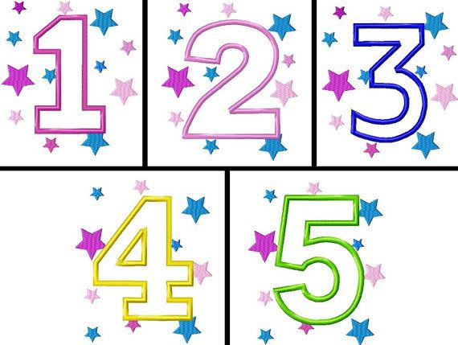

Use this handy image map to help you negotiate my top 5 websites! Just click on which one you want to see (#1 is my favourite movie)!

My fifth favourite movie is: The Internship. The movie is about 2 men named Billy (played by Vince Vaughn) and Nick (played by Owen Wilson) who get downsized by their company due to the obseleteness of watches. Billy, despite not having any knowledge about technology, signs them both up for an internship at Google which could possibly lead to a job. Hilarity ensues when these two compete against teens for a chance to recieve a position at Google.
This movie makes it into my Best of because the comedic chemistry between the two characters is too good to not enjoy. In addition, it has heartwarming lessons while pushing along the theme that you're never too old to accomplish something and that dreams do come true when you work towards them. Finally, it's a good watch becsue it's an unusual and interesting setting for a movie that grabs the viewer's attention.
Check out this clip from the film!

My fourth favourite movie is: Doctor Strange. This movie is about a man name Dr. Stephen Strange (played by Benedict Cumberbatch) who gets in a car accident robbing him of cognitive use of his hands. When the medium he is used to (medicine) fails him, he seeks aid from people that live in a secret temple. Soon, he learns the arts of these people and must fight the forces of the dark with his newly learned abilities.
This movie makes it into my Best of because of the amazing special effects in it. While the stroyline is compelling and interesting, it takes a backseat to the effects in this film. In one scene, there is a fight on buildings that are shifting within time. It looks extremely realistic, and furthermore, cool. I'd reccomend this film to anyone who has a passion for hero movies but doesn't want your conventional "good guy kills bad guy" scenario.
Check out this clip from the film!
My third favourite movie is: Deadpool. This movie is about a man named Wade Wilson (played by Ryan Reynolds) is a former Special Forces operative that has now become a mercenary. His world changes forever after he is tortured by Ajax (played by Ed Skrein) and recieves extreme regeneration that also disfigures him. In an attempt to gain his old body back, he uses his new power to chase down the man that destroyed his body.
This movie makes it into my Best of because of the amazing comedy and action. This movie has funny and mature jokes while still maintaining an interesting storyline. Furthermore, the amazing action scenes combined with witty dialogue and fourth wall breaks is a perfect recipe for comedy.
Check out this clip from the film!
My second favourite movie is: Guardians of the Galaxy. This movie is about a man named Peter Quill (played by Chris Pratt) that is a bounty hunter. When finding treasure, he accidently finds an orb that has the power to destroy galaxies. In a mission to defend the galaxy, he and his misfit group of "heroes" must band together to stop evil powers from stealing the orb.
This movie makes it into my Best of because of the comedy, the action, and because I like Chris Pratt. Chris Pratt is one of my favourite actors. This film also has a bunch of well-written comedic lines that tie into a riveting storyline about defendng the universe. I would recommend this movie to anyone thatis a fan of comics but enjoys the comedy genre.
Check out this clip from the film!
My favourite movie of all time is: 22 Jump Street. This movie is about 2 men named Jenko (played by Channing Tatum) and Scmidt (played by Jonah Hill) that are undercover cops. Their mission is to infiltrate a drug rung in a local college to find out who's leading it. Hilarity ensues when they poorly try to act as college students.
This movie makes it into my Best of because of the comedy and action. The comedy in this movie is outrageous. The two actors play their role very convincingly and have a unique chaemistry that adds to the hilarity. The best part is that the action is also comedic becuase tese two people that are supposed to be professionals, look like fools.
Check out this clip from the film!
Website Creator:Ryan Blasetti
Course:Computer Science
Teacher of Course:Mr. E. Henin
Program Used:Text (chrome web app)
Thanks especially to you for reading my site!